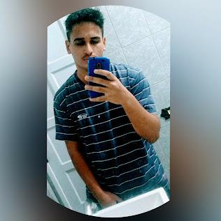
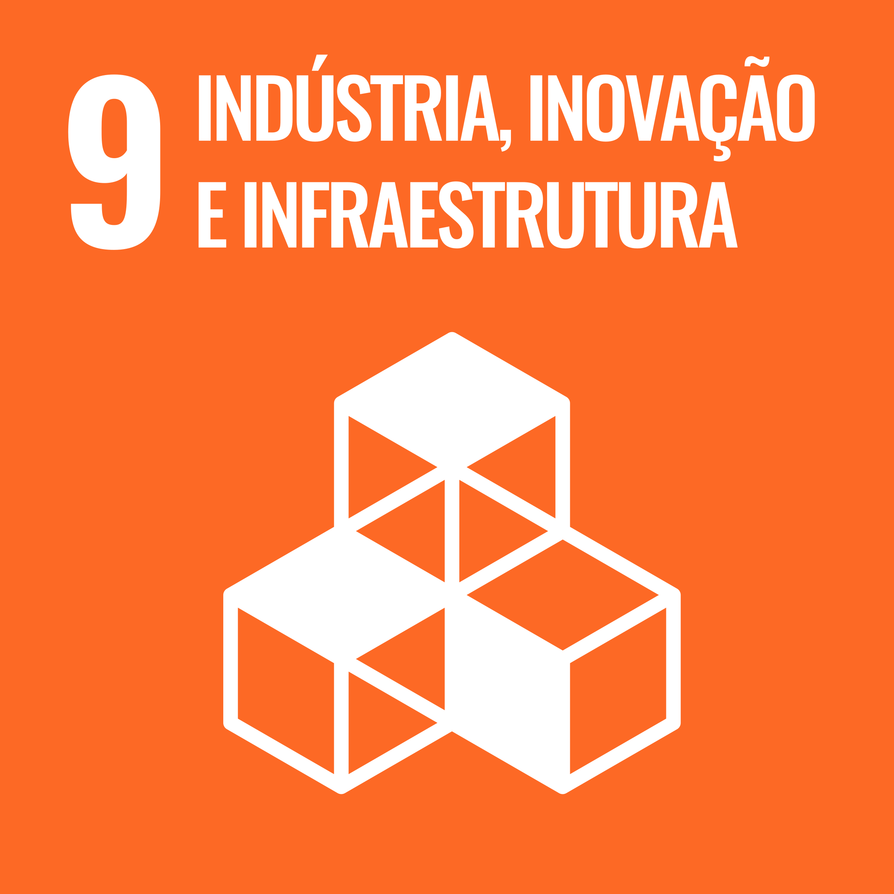

Pedro Lucas da Silva Mota

Contato
pedrolucasmota2005@gmail.com
https://br.linkedin.com/in/pedro-lucas-silva-mota-769a70267?trk=people-guest_people_search-card
Cornélio Procópio: Paraná
Resumo
Estudante de Engenharia de Software na Universidade Tecnologica Federal do Parana
ODS

Habilidades
Desenvolvimento Backend
Banco de Dados
Manutenção de hardware
Desenvolvimento Backend
Educação
Graduação em Engenharia de Software
UTFPR-CP
2023-2026
Projeto Reprograme-se
IFES
2022-2023
Hobies
Ler
Jogar
Assistir Filmes e Series
Adcionais
Perfil do github